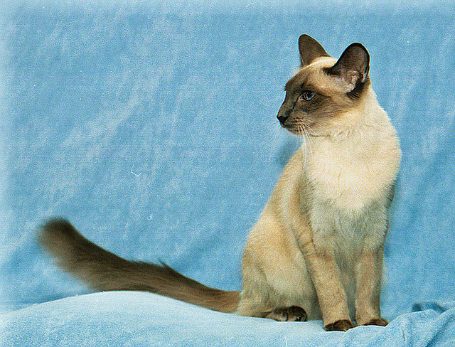

Kot balijski
Pochodzenie
Kot balijski to nic innego, jak siostrzana rasa kota syjamskiego, od którego różni się tylko długością okrywy włosowej. Nie wiadomo, jakie jest pochodzenie genu warunkującego długi włos: czy jest to naturalna mutacja, czy też efekt kojarzenia z kotami długowłosymi. Wydaje się jednak, że pojawienie się tego genu w genotypie syjamów nastąpiło bardzo dawno temu.
Charakter i zachowanie
Kot balijski ma duży temperament, jest zwinny, wesoły i energiczny. To urodzony akrobata - uwielbia się wspinać, dlatego chętnie skorzysta ze specjalnego kociego słupka. Jest ruchliwy i potrzebuje sporo miejsca do zabawy i ćwiczeń. Można wychodzić z nim na spacery, jeśli nauczy się chodzić na smyczy. Ciekawski i wszędobylski, uwielbia być w centrum zainteresowania.
Pielęgnacja
Pielęgnacja kota balijskiego nie sprawia problemu. Jego długo długie futro dobrze jest czesać w miarę regularnie, najlepiej grzebienie lub niezbyt gęstą szczotką o prostych zębach. Poza tym stosujemy standardowe zabiegi pielęgnacyjne.